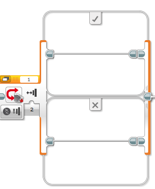

This is one program:
Have the robot go in a loop, displaying the eyes pinch left, pinch middle, pinch right, pinch middle, with a half of a second between images, until the bump sensor is BUMPED.
Then display crazy 1 for a half second, and then crazy 2 for a half second.
Can you add this to a My Block and then place this My Block around an infinite loop?
This is another program:
Switch Block Bumped program
Display a Neutral expression for 2 seconds.
Wait 1 seconding and then end the program
Can you add this to a My Block and then place this My Block around an infinite loop?